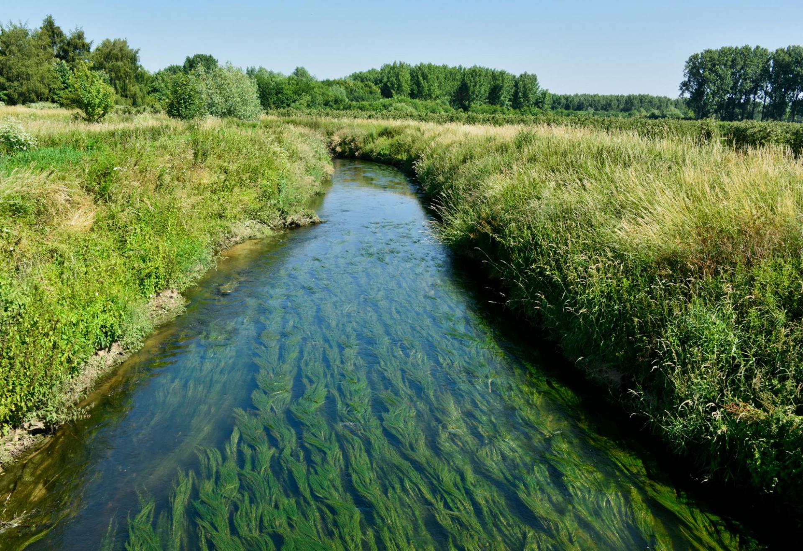

Ons vakantiehuis “Bed ‘n Blues” is een luxueuze accommodatie voor 2 of 4 personen, gelegen gelijkvloers in het stadscentrum van Halen. Het omvat een zeer mooie, aangename woonkamer met radio, TV, DVD speler en WIFI. Er is een eigen keuken met vaatwasser, frigo met vriesvak, kookplaat, microgolfoven, koffiezetapparaat, waterkoker, toaster, oven, kookgerief, enz… De slaapkamers zijn zeer gezellig ingericht met een luxe boxsprings en de badkamer heeft een ruime douche en een wastafel met opbergkastje. Badlinnen, haardroger en basisproducten zijn voorzien. Het toilet is in een aparte ruimte met kleine wastafel en spiegel. Er is een groot terras, bereikbaar vanuit de keuken, met tafel, stoelen, BBQ en aansluitend een vrij grote tuin.

Laat de deugdoende warmte van de sauna als een heerlijk dekentje over je heen vallen en ervaar het heilzaam effect ervan op jouw lichaam. De infraroodsauna ontspant de spieren en verzacht eventuele pijnen van gewrichten. De infrarood-sauna kent de laatste jaren een heuse opmars. Anders dan de klassieke ‘Finse’ sauna is de werking van een infrarood-sauna gebaseerd op de (onzichtbare) infraroodstralingswarmte die opgewekt wordt met diverse types van stralers. Het kenmerk van infraroodwarmte is dat deze warmte wordt overgebracht naar de huid zonder dat er warme lucht aan te pas komt. DE ZON IS DE BELANGRIJKSTE ENERGIEBRON OP AARDE. TIJDENS EEN WARME ZOMERDAG ERVAREN WE DE WELDAAD VAN DE ZONNESTRALEN OP ONZE HUID. EEN INFRAROODCABINE WERKT OP EENZELFDE MANIER ALS DE ZON: U KRIJGT VOLOP POSITIEVE ENERGIE! De infraroodstralers van een infraroodcabine verwarmen u van binnenuit en hebben daardoor een betere dieptewerking dan een traditionele sauna. Klinische studies tonen aan dat infraroodwarmte verlichtend werkt bij spier- en gewrichtspijnen. Maar doordat u in een infraroodcabine ook flink transpireert, reinigt u uw lichaam en verbetert u uw weerstand. Wist u dat u in een infraroodcabine tot 7 keer méér gifstoffen kwijtraakt? Een sessie in een infraroodcabine is niet alleen goed voor uw spieren en gewrichten, tijdens de sessie verbrandt u ook een hoog aantal calorieën. Onderzoek heeft aangetoond dat u tijdens een sessie van 30 minuten tot 600 calorieën verbrandt, terwijl u heerlijk ontspant in de infraroodcabine. Wil je verder als gast van Bed ‘n Blues helemaal tot rust komen, kan dit ook in de voorziene relaxruimte met zelfs een glaasje bubbels. Sauna & Welness : mits bijbetaling


We mogen ons vanaf nu ook officieel Fietslogies noemen! Wij stellen 6 fietsen ter beschikking van onze gasten (2 gewone fietsen en 4 E-bikes - waaronder 2 vouwfietsen) Zo kan u het fietsroutenetwerk gaan ontdekken vanuit Bed 'n Blues, of als u de vouwfietsen met de auto wil meenemen ligt de hele Limburg in uw bereik. Dankzij de knooppuntenkaart kan u uw fietsroute uitstippelen, en daarnaast zijn er eveneens verschillende routes ter beschikking. Wie zelf zijn fiets meebrengt kan deze in onze fietsenstalling zetten, waar ook laadpunten voorzien zijn. Redenen genoeg dus voor een weekendje fietsen in Limburg. Dit project werd mede mogelijk gemaakt dankzij Provincie Limburg


Halen ligt op de grens van Haspengouw, Hageland en Kempen. Dat maakt dat elk kerkdorp, Halen, Zelem, Zelk of Loksbergen, een andere belevenis biedt. Met de fiets kom je langs de mooiste plekjes van Halen. Ook staat Halen bekend om de ‘Slag der Zilveren Helmen’ (12 augustus 1914). Leer alles over WO I in het museum Slag der Zilveren Helmen. Zelem heeft een mooie oude dorpskern maar vergeet ook niet het kasteeldomein van Sint-Jansberg een bezoek te brengen. Vertrekkend vanuit het streekmuseum Reinvoart in Loksbergen kan je prachtige wandelingen maken door de holle wegen en fruitboomgaarden. De volledige lijst van de Halense monumenten hier opsommen is niet onze bedoeling. Bij onze toeristische informatie tref je alvast de Monumentenfolder aan en vind je tal van pareltjes, waaronder ook Limburg 1914-1918: Dit zijn wij, 44 Limburgse helmen om er ééntje te noemen. Maar hou je ook van geheimzinnige kloosters, unieke musea, pittoreske waterlopen, voorjaarsbloesems of wil je ‘t Schulensmeer, en de wijngaarden in Halen ontdekken? Dit kan allemaal. Voor fiets- of wandeltochten is dit de locatie bij uitstek. Diverse uitgestippelde routes passeren er voor de deur.